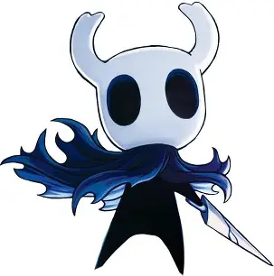
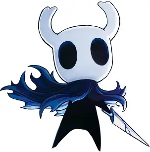

Historia del Caballero
El Caballero es un misterioso viajero que llega a Hallownest atraído por una llamada. Su viaje lo llevará a enfrentarse con enemigos, descubrir secretos y decidir el destino del reino.
Noticias, teorías y curiosidades del reino de Hallownest
Hollow Knight es un metroidvania desarrollado por Team Cherry. Exploras un vasto reino subterráneo habitado por insectos y criaturas misteriosas. Aquí encontrarás artículos, guías y reflexiones sobre este gran juego.
El Caballero es un misterioso viajero que llega a Hallownest atraído por una llamada. Su viaje lo llevará a enfrentarse con enemigos, descubrir secretos y decidir el destino del reino.
Hollow Knight es famoso por su dificultad. Algunos de los jefes más temidos son:
- Hollow Knight fue financiado en Kickstarter en 2014. - Está inspirado en juegos como Metroid y Dark Souls. - Tiene múltiples finales dependiendo de tus acciones.